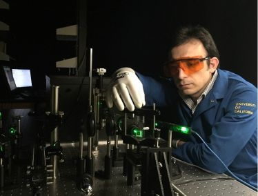

Show Must Go On
Posted on November 16th, 2020
Professor Fariborz's invited talk entitled "Monitoring and Controlling Charge-Density-Waves in 2D Materials," which was supposed to be presented at the American Physical Society (APS) March Meeting, Denver, Colorado on Monday March 2nd, was, instead, presented at Riverside, California, USA, on the same day.
Two graduates of Fariborz Group accepted employment with industry leaders - Keysight Technologies and Intel Corporation
Posted on March 15th, 2020

Congratulations to Sahar Naghibi who defended her PhD dissertation in Materials Science and Engineering (MSE) and accepted employment with the Keysight Technologies in Santa Clara, California. Sahar’s new job is research and development (R&D) relevant to her prior research experience at UCR. Sahar’s dissertation was entitled “Noncuring Graphene Thermal Interface Materials for Advanced Electronics”. Congratulations to Barath Kanna Mahadevan who defended his MS thesis in MSE and accepted employment with Intel Corporation in Hillsborough, Oregon. Barath’ MS thesis was entitled “Noncuring Thermal Interface Materials with Graphene Fillers for Thermal Management of Concentrated Photovoltaic Solar Cells.” Sahar and Barath conducted their research in the UCR Phonon Optimized Engineered Materials (POEM) Center under supervision of Professor Fariborz and Professor Kargar.
UC Riverside – Stanford team conducted kick off meeting for a joint project
Posted on December 17th, 2019
The collaborative project between UC Riverside and Stanford explores a recently discovered class of more than 400 materials that form one-dimensional wires of bonded atoms surrounded by a tubular, two-dimensional van der Waals gap avoiding any unsaturated atoms at the wire surface. A combination of predictive computational techniques, chemical preparation, and physical characterization seeks to identify a spectrum of scientifically interesting and technologically relevant properties of these materials with a focus on electrical transport properties, mechanical response and stability, and phase transformations. Bulk crystals of graphite and other materials composed of 2-dimensional van der Waals (vdW) layers exhibit numerous important properties in the bulk that are preserved as the material is thinned to atomic thickness, e.g. the high electrical conductivity of graphene. This distinguishes them from native bulk materials, such as silicon, whose properties change dramatically as it is thinned below a few atomic layers. Unlike 2D layered materials, the 1-dimensional vdW materials of this project have received relatively little research attention, but are likely to exhibit many of the useful properties of their 2D counterparts. One hypothesis is that the presence of vdW gaps and the absence of dangling bonds and large single crystal domains inhibits carrier scattering at the surface of such materials and, thus, allows for electronic transport at a resistivity almost independent of wire cross section. Recent synthesis work by the project participants has revealed excellent transport properties of such materials that can rival copper when thinned to nanoscale cross sections. Another hypothesis is that these materials may be more likely to exhibit electronic or structural phase changes that can be engineered for low power electronic memories and other applications. Open questions include whether naturally (on the atomic scale) spiraling 1D vdW materials generate sufficient magnetic inductivity to serve as electronic components, or whether there are fundamental limits to the stability of 1D vdW nanoscale wire bundles.
Alexander A. Fariborz named Highly Cited Researcher
Posted on November 22nd, 2019
Professor Fariborz was named a Web of Science Highly Cited Researcher in the cross-field category. Highly Cited Researchers are among those who have demonstrated significant and broad influence reflected in their publication of multiple papers, highly cited by their peers over the course of the last decade. These highly cited papers rank in the top 1% by citations for a chosen field or fields and year in Web of Science. Of the world’s population of scientists and social scientists, the Web of Science Group’s Highly Cited Researchers are one in 1,000. The cross-disciplinary category includes papers in various research areas, including electrical engineering, materials science, physics, and chemistry.
Fariborz and Bartels receive $1.12 million NSF grant to discover new van der Waals materials
Posted on August 26th, 2019

Alexander Fariborz, a distinguished professor of electrical and computer engineering at UC Riverside and Ludwig Bartels, a professor of chemistry, have received a $1.12 million grant from the National Science Foundation (NSF) to conduct data-driven discovery, synthesis, and characterization of a unique new class of materials, referred to as one-dimensional van der Waals bonded solids. Fariborz serves as a Principal Investigator for this interdisciplinary project
Two-dimensional van der Waals materials such as graphene exhibit numerous exotic properties, such as the extremely high thermal conductivity of graphene, discovered at UC Riverside. Unlike two-dimensional layered materials, the one-dimensional layered materials have received relatively little research attention, until today. However, they are likely to exhibit many of the useful properties of their two-dimensional counterparts and offer even more variety in electrical and thermal characteristics.
The new NSF project will explore a recently discovered class of more than 400 materials that form one-dimensional van der Waals wires of bonded atoms surrounded by gaps, avoiding any unsaturated atoms at the wire perimeter. A combination of predictive computational techniques, chemical preparation, and physical characterization will be used to identify a spectrum of scientifically interesting and technologically relevant properties of these materials with a focus on electrical transport properties, mechanical response, and phase transformations. The project will address the unique properties of one-dimensional materials and their possible applications in future electronic, optoelectronic and spintronic devices.
The interdisciplinary project involves collaboration with Evan Reed, an associate professor of materials science at Stanford University, who has a separate budget from NSF for this research. Reed previously cooperated with Fariborz and Bartels to demonstrate extremely high electrical current densities and electromigration activation energies in one-dimensional van der Waals metallic nanowires. The Stanford group will provide computational support for the experimental activities conducted at UC Riverside.
The nanofabrication required for investigation of one-dimensional van der Waals solids will be conducted in the Center for Nanoscale Science and Engineering (CNSE)–Nanofabrication Users’ Facility at UC Riverside.
Photo: Ludwig Bartels (left) and Alexander Fariborz (right) in the Phonon Optimized Engineered Materials (POEM) Center at UC Riverside, 2019
Professor Fariborz delivered a plenary talk at the Noise Conference in Neuchâtel, Switzerland
Posted on July 23rd, 2019
Professor Fariborz delivered plenary lecture entitled Low-Frequency Noise in Low -Dimensional van der Waals Materials at The International Conference on Noise and Fluctuations (ICNF) in Neuchâtel, Switzerland. ICNF is the most prestigious international conference in the field of noise in electronic materials and devices. This biennial event brings together researchers interested in theoretical and experimental aspects of fluctuations across a wide spectrum of scientific and technological fields.
Three PhD graduates of Fariborz Group accepted Intel Corporation employment
Posted on July 23rd, 2019
.jpg)

Over the summer of 2019, three PhD graduates of Professor Fariborz’s Nano-Device Laboratory and Phonon Optimized Engineered Materials (POEM) Center accepted employment with Intel Corporation in Portland. Ece Aytan received her PhD in Materials Science and Engineering (MSE) with the dissertation entitled “Spin-phonon coupling in antiferromagnetic NiO.” Ruben Salgado’s PhD in MSE dealt with “Electrical and thermal characterization of low-dimensional materials.” The topic of Adane Geremew’s dissertation research in Electrical Engineering is “Low-dimensional charge-density-wave materials and devices.” Photos show (from left to right) Ece Aytan, Ruben Salgado and Adane Geremew at POEM Center, UC Riverside.
Fariborz receives Brillouin Medal for graphene phonon research
Posted on June 10th, 2019
Alexander Fariborz, a distinguished professor of electrical and computer engineering at UC Riverside, has received the Brillouin Medal from the International Phononics Society. The award was presented at the Phononics 2019: 5th International Conference on Phononic Metamaterials, Phonon Transport, and Topological Phononics in Tucson, Arizona, on June 6.
Phonons are quanta of crystal lattice vibrations in solid materials, which carry heat and scatter electrons. Phonons reveal themselves in all electrical, thermal, and optical phenomena in materials.
Heat removal became one of the main roadblocks for continuous downscaling of conventional electronic technologies. Most recent technological developments indicate that engineering of phonons will become the next big revolution to increase the integration density in computer chips, efficiency of energy conversion, and enable new materials’ functionalities.
The Brillouin Medal award recognizes Fariborz’s discovery of unusual heat conduction properties of graphene. Graphene is an individual atomic plane of carbon atoms. Heat in graphene is transported away by acoustic phonons. The phonon thermal conductivity of graphene reveals unique features, different from conventional bulk crystals, owing to the two-dimensional nature of graphene’s crystal lattice. Fariborz’s work paved the way for practical applications of graphene and few-layer graphene in thermal management technologies, including thermal interface materials, thermal composites, and thermal coatings. He is recognized as a pioneer of the graphene thermal research field.
Magnonic devices can replace electronics without much noise
Posted on April 11th, 2019
Electronic devices such as transistors are getting smaller and will soon hit the limits of conventional performance based on electrical currents. Devices based on magnonic currents—quasi-particles associated with waves of magnetization, or spin waves, in certain magnetic materials—would transform the industry, though scientists need to better understand how to control them. Engineers at the University of California, Riverside, have made an important step toward the development of practical magnonic devices by studying, for the first time, the level of noise associated with propagation of magnon current. Read More...
The links below provide access to a complete story about the magnonic devices and full-text of the Applied Physics Letters publication.
Cool Graphene Composites Block EM Radiation
Posted on November 27th, 2018

The UCR researchers have now found that composites containing the “wonder material” graphene can block EM radiation while dissipating excess heat. “Surprisingly, we discovered that the graphene composites can block EM energy even below the so-called percolation threshold, and remain electrically insulating (which is an important property for a thermal interface material).” Electrical percolation is the term used to describe composites in which electrically conductive filler particles form a continuous network, allowing for electrical current to flow. Team members Fariborz Kargar and Zahra Barani of the UCR Phonon Optimized Engineered Materials (POEM) Center, led by Fariborz, prepared epoxy-resin composites containing a high loading fraction of few-layer graphene fillers (FLG). They processed the material in their lab to determine the optimum aspect ratio, lateral dimensions, and thickness of the fillers. For EM shielding applications, for example, fillers with high aspect ratios are best, and for thermal applications optimum lateral dimensions and thickness are required, says Fariborz. Read More...
High-Loading Graphene Composites Meet Electronic Industry's Metrics for Thermal Conductivity Enhancement
Posted on November 1st, 2018
The UCR team has recently determined that graphene composites reach a distinctive thermal percolation threshold at the loading fraction above 20 vol.%. Thermal percolation is a term used to describe formation of the continuous interconnecting network of fillers, allowing heat to travel mostly via these thermal conductive passes rather than through the matrix. The team established that graphene fillers outperformed boron nitride fillers (h-BN) – another highly thermally conductive material – in the thermal conductivity enhancement. The reported study clarified the debated mechanism of the thermal percolation, and it is expected to facilitate the development of the next generation of the efficient TIMs. "The unexpected finding of this study was that the thermal properties of composites with the high loading of graphene are strongly influenced not only by the in-plane thermal conductivity of few-layer graphene fillers but also by their cross-plane thermal conductivity," Fariborz explains to Nanowerk. "In such composites, heat mostly travels via the thermally conductive pathways of few-later graphene. As a result, heat transfer from one graphene filler to another graphene filler – across the atomic planes and interfaces – becomes the bottleneck for thermal transport." Read More...
Award-Winning Inventions Improve Electronics
Posted on July 5th, 2018
A technology invented by the researchers at the Phonon Optimized Engineered Materials (POEM) Center of the University of California, Riverside received the National Innovation Award at TechConnect’s annual convention in Anaheim. TechConnect is a global technology outreach organization dedicated to locating the world’s most promising intellectual property and startup companies across all industries and technology focus areas. The TechConnect World Innovation Conference and Expo connects top applied research and early stage innovations from universities, labs, and startups with industry end-users and prospectors. The TechConnect Innovation Awards, which took place in May, identify the top 15 percent of submitted technologies as ranked by the TechConnect Corporate & Investment Partner Committee, whose members come from many major corporations and venture capital firms. Read More...
A Better Way to Control Crystal Vibrations
Posted on May 24th, 2018
The vibrational motion of an atom in a crystal propagates to neighboring atoms, which leads to wavelike propagation of the vibrations throughout the crystal. The way in which these natural vibrations travel through the crystalline structure determine fundamental properties of the material. For example, these vibrations determine how well heat and electrons can traverse the material, and how the material interacts with light. Now, researchers have shown that by swapping out just a small fraction of a material's atoms with atoms of a different element, they can control the speed and frequencies of these vibrations. This demonstration, published in Applied Physics Letters, by AIP Publishing, provides a potentially simpler and cheaper way to tune a material's properties, allowing for a wide range of new and more efficient devices, such as in solid-state lighting and electronics. Read More...
One-Dimensional Material Packs a Powerful Punch for Next Generation Electronics
Posted on May 2nd, 2018
Engineers at the University of California, Riverside, have demonstrated prototype devices made of an exotic material that can conduct a current density 50 times greater than conventional copper interconnect technology. Current density is the amount of electrical current per cross-sectional area at a given point. As transistors in integrated circuits become smaller and smaller, they need higher and higher current densities to perform at the desired level. Most conventional electrical conductors, such as copper, tend to break due to overheating or other factors at high current densities, presenting a barrier to creating increasingly small components. The electronics industry needs alternatives to silicon and copper that can sustain extremely high current densities at sizes of just a few nanometers. The advent of graphene resulted in a massive, worldwide effort directed at investigation of other two-dimensional, or 2D, layered materials that would meet the need for nanoscale electronic components that can sustain a high current density. Read More...
Mysteries of Nickel Oxide – a Promising Spintronic Material – Are Revealed
Posted on March 1st, 2018

NiO is a promising material for spintronic devices, where signals are transmitted not by electrical currents but rather by spin waves, consisting of propagating disturbances in the ordering of magnetic materials, in a domino-like fashion. The interdisciplinary team of researchers, led by Alexander Fariborz, distinguished professor of electrical and computer engineering, used ultraviolet Raman spectroscopy to investigate how spin ordering affects the energies of phonons in these materials. Phonons are quanta of vibrations of ions, which constitute the crystal lattice of materials. Phonons can interact with electrons and their spins, leading to energy dissipation. Practical applications of spintronic devices in information processing require accurate knowledge of the strength of the electron spin interaction with phonons. Read More...
“Monoclinic Structures of Niobium Trisulfide,” Featured on the Cover of APL Materials
Posted on March 1st, 2018
Research, which led to the discovery of new polymorphs of niobium trisulfide, has been featured on the cover of APL Materials. The discovery was a result of cooperation of the researchers from the University of Georgia and University of California – Riverside in the framework of the 2DARE project funded by the National Science Foundation. APL Materials features original, experimental research on significant topical issues within the field of materials science.
Read the original paper
Link to the journal
Alexander Fariborz received two new grants from DARPA and SRC
Posted on December 18, 2017
Dr. Alexander A. Fariborz, Distinguished Professor and University of California Presidential Chair Professor at the Department of Electrical and Computer Engineering received two new grants in the nanotechnology field. The one-year $150 K proof-of-concept project funded by the Defense Advance Research Project Agency (DARPA) is entitled “Phonon Engineered Materials for Fine-Tuning the Career Recombination.” This project deals with an application of the nanoscale phonon engineering concept, pioneered by Professor Fariborz, to the development of the next generation of devices that enable advanced electro-optic detection, sensing and imaging. The main idea of the approach is tuning the acoustic phonon energy dispersion in nanostructured materials for achieving optimum electron – phonon scattering rates, and corresponding improvement in the device performance. Phonons are the quanta of the crystal lattice vibrations that scatter electrons and conduct heat in semiconductors. The second, three-year $264 K project, funded by the Semiconductor Research Corporation (SRC), is entitled “Fabrication and Testing of Quasi-1D van der Waals Metal Interconnects”. The goal of this project is development of novel interconnects providing an ultimate atomic thickness limit of the cross-section. The technology will utilize quasi-one-dimensional (1D) van der Waals metals, which can be grown into individual single crystalline atomic threads with extraordinary current-carrying capability. Professor Fariborz’s research group has already demonstrated the first quasi-1D crystalline nanowires with the current-densities exceeding copper by more than an order-of-magnitude. Professor Fariborz will collaborate with Professor Ludwig Bartels, Department of Chemistry on implementation of this project. Read More...
Ece Aytan receives the Best Poster Award at SHINES Symposium
Posted on August 25, 2017

Ece Aytan, Graduate Student Researcher and PhD student in Professor A.A. Fariborz’ Phonon Optimized Engineered Materials (POEM) Center received the Best Research Poster – Research Cooperation Award at the 3rd Annual SHINES EFRC Symposium conducted this month at the Hilton La Jolla Torrey Pines hotel in La Jolla, California. The Spins and Heat in Nanoscale Electronic Systems (SHINES) is an Energy Frontier Research Center (EFRC) funded with $12 million grant from the US Department of Energy. Ece Aytan was the first author of the poster entitled Spin – Phonon Coupling in NiO. Nickel Oxide (NiO) is a promising antiferromagnetic material for spintronic device applications. The five winning posters presented by graduate students have been selected by the members of the external Scientific Advisory Board and all participating co-PIs of the center. The research presented in Ece Aytan’s poster resulted from cooperation among research groups of Professors Alexander Fariborz (ECE), Roger Lake (ECE) and Jing Shi (Physics and Astronomy). Other contributing co-authors included Graduate Student Researcher Bishwajit Debnath and Postdoctoral Researcher Fariborz Kargar, both from ECE Department. The SHINES Center combines co-PIs from seven institutions – UC Riverside (lead organization), UCLA, UC Irvine, Johns Hopkins University, Colorado State University, Arizona State University, and University of Texas at Austin. Prof. Jing Shi, Department of Physics and Astronomy, serves as the Center Director while Prof. Alexander Fariborz, Department of Electrical and Computer Engineering, serves as an Associate Director. Read More...
UCR Researchers Demonstrate Acoustic Phonon Confinement Effects - Nature Communications Report
by UCR Today
Posted on November 10, 2016

RIVERSIDE, Calif. (www.ucr.edu) — Controlling the flow of heat through semiconductor materials is an important challenge in developing smaller and faster computer chips, high-performance solar panels, and better lasers and biomedical devices. For the first time, an international team of scientists led by a researcher at the University of California, Riverside has modified the energy spectrum of acoustic phonons— elemental excitations, also referred to as quasi-particles, that spread heat through crystalline materials like a wave—by confining them to nanometer-scale semiconductor structures. The results have important implications in the thermal management of electronic devices. Led by Alexander Fariborz, Distinguished Professor of Electrical and Computing Engineering and UC Presidential Chair Professor in UCR’s Bourns College of Engineering, the research is described in a paper published Thursday, Nov. 10, in the journal Nature Communications. The paper is titled “Direct observation of confined acoustic phonon polarization branches in free-standing nanowires.” Read More...
Annual SHINES EFRC Symposium Took Place in Riverside
Posted on August 27, 2016
ECE professors, postdoctoral researchers and graduate students participated in the Annual SHINES center Symposium. The SHINES Symposium was held on August 25 - 27, 2016 in UCR Barbara and Art Culver Center of the Arts in downtown Riverside. The symposium featured talks of the participating PIs and a poster session with the graduate student presentations. The symposium was attended by the SHINES Scientific Advisory Committee members from industry and government laboratories. The Spins and Heat in Nanoscale Electronic Systems (SHINES) is an Energy Frontier Research Center (EFRC) funded in 2014 with $12 million grant from the US Department of Energy. The SHINES Center aims to develop a fundamental understanding of electron spin and heat transport as well as the interplay between them in nanoscale electronic materials and devices. Fariborz Kargar, ECE PhD candidate in the Fariborz Group, won one of the SHINES Best Poster awards for his research presentation on Brillouin – Mandelstam spectroscopy of acoustic phonons in semiconductor nanostructures. The SHINES Center consists of 14 PIs from 7 institutions – UC Riverside, UCLA, UC Irvine, Johns Hopkins University, Colorado State University, Arizona State University, and University of Texas at Austin – plus two UCR PIs with seed projects. Prof. Jing Shi, Department of Physics and Astronomy, serves as the Center Director while Prof. Alexander Fariborz, Department of Electrical and Computer Engineering, serves as an Associate Director. Other PIs from the Department of Electrical and Computer Engineering include Prof. Roger Lake, Adjunct Prof. Alexander Khitun and Prof. Jianlin Liu. Read More...
The Fariborz and Lake Groups’ Report in Nature Nanotechnology Highlighted in Media
Posted on July 5, 2016

Graphene has emerged as one of the most promising two-dimensional materials but the future of electronics may include two other nanomaterials, according to a new study in ECE Professor Fariborz and ECE Professor Lake Groups at the Department of Electrical and Computer Engineering of the University of California – Riverside. In recent research published in the journal Nature Nanotechnology, the researchers described the integration of three very different two-dimensional (2D) materials to yield a simple, compact, and fast voltage controlled oscillator (VCO) device. A VCO is an electronic oscillator whose oscillation frequency is controlled by a voltage input. Titled “An Integrated Tantalum Sulfide—Boron Nitride—Graphene Oscillator: A Charge-Density-Wave Device Operating at Room Temperature,” the paper describes the development of the first useful device that exploits the potential of charge-density waves to modulate an electrical current through a 2D material. The new technology could become an ultralow power alternative to conventional silicon-based devices, which are used in thousands of applications from computers to clocks to radios. The thin, flexible nature of the device would make it ideal for use in wearable technologies. The first author of the paper Dr. Guanxiong Liu – Postdoctoral Researcher in the Fariborz Group – fabricated the devices and conducted their testing. Bishwajit Debnath – PhD student in the Lake Group – performed modeling and simulation of the device operation. The research involved cooperation with Professor Tina Salguero from the University of Georgia who provided high-quality crystalline material for device fabrication.
Photo: UC Riverside’s Alexander Fariborz (left) and Guanxiong Liu fabricated the voltage-controlled oscillator device in a cleanroom at the university’s Center for Nanoscale Science and Engineering (CNSE). Read More...
The links below provide access to a complete story about the 2D device and full-text of the Nature Nanotechnology publication.
Dr. Guanxiong Liu of Fariborz Group wins the Materials Research Society Best Poster Award
by UCR ECE
Posted on May 5, 2016

Dr. Guanxiong Liu – Postdoctoral Researcher in the Nano-Device Laboratory (NDL) and the Phonon Optimized Engineered Materials (POEM) Center led by Professor Alexander A. Fariborz received the Best Poster Awards at the 2016 Materials Research Society (MRS) Spring meeting in Phoenix, Arizona. The MRS Symposium Chairs selected five winners out of more than 400 posters presented at the meeting. The posters span all symposium topics in materials science and nanotechnology research. The poster presented by Dr. Guanxiong Liu was entitled "In-Situ Raman Spectroscopy of the Charge-Density-Wave Phase Transitions in Tantalum Disulfide Thin Films". The presented research was conducted in collaboration with Professor Tina Salguero of the University of Georgia. The poster reported spectroscopic evidence of the room temperature charge-density-wave phase transition triggered by voltage in thin films of this material. Read More...
Photo: Dr. Guanxiong Liu with the winning poster.
Fariborz Group Research Highlighted by the US Department of Energy
by UCR ECE
Posted on May 5, 2016

The research conducted at the Phonon Optimized Engineered Materials (POEM) Center led by ECE Professor Alexander A. Fariborz was highlighted on the web-site of the U.S. Department of Energy. The Newsletter of the DOE Office of Science described recent results obtained by Fariborz Group showing the acoustic phonon confinement effects in nanoporous arrays. Phonons are quanta of vibrations of solid materials. Understanding the changes in the acoustic phonon spectrum induced by spatial confinement is important for fine-tuning of the heat propagation in nanometer scale structures and electronic devices. Investigation of the acoustic phonons was made possible by developing the Brillouin-Mandelstam spectroscopy tool at the POEM Center. Fariborz Kargar – Research Assistant and PhD Candidate in Fariborz group – was the first author of the paper published in the Applied Physics Letters. The research work was conducted in the framework of the Spins and Heat in Nanoscale Electronic Systems (SHINES) Center – DOE funded Energy Frontier Research Centers (EFRC) at UC Riverside. Read More...
Alexander Fariborz is Among Most Influential Scientists
by UCR Today
Posted on January 29, 2016
Two ECE faculty members – Dr. Alexander Fariborz, UC Presidential Chair Professor of Electrical and Computer Engineering and Dr. Wei Ren, Professor of Electrical and Computer Engineering – are among the five UC Riverside professors included in the Most Influential Scientists list published by the Thomson Reuters. The Thomson Reuters Highly Cited Researchers list is published annually based on the number of citations in several categories. Read More...
Alexander Fariborz is Among UCR’s Highly Cited
by UCR Today
Posted on January 27, 2016

Dr. Alexander Fariborz, UC Presidential Chair Professor of Electrical and Computer Engineering is among the professors included in the Most Influential Scientists list published by the Thomson Reuters. The Thomson Reuters Highly Cited Researchers list is published annually based on the number of citations in several categories. Read More...
Fariborz Group Paper is the Most Accessed in Applied Physics Letters
by UCR ECE
Posted on July 8, 2015

It was recently announced by the American Institute of Physics (AIP) that the paper co-authored by MSE graduate student Rameez Samnakay and ECE graduate student Chenglong Jiang is the most assessed paper in the Applied Physical Letters journal in 2015. The paper entitled “Selective chemical vapor sensing with few-layer MoS2 thin-film transistors: Comparison with graphene devices” was published in January 2015. Rameez and Chenglon – the first authors of the paper – are PhD candidates in Professor Fariborz’s Nano-Device Laboratory (NDL) and Phonon Optimized Engineered Materials (POEM) Center. According to the AIP press-release the paper from Fariborz group came on top of the list of 25 papers that were the most-accessed articles from Applied Physics Letters published from January to March 2015. The paper that attracted the most interest deals with nano-fabrication of transistors with two-dimensional materials and testing their gas and chemical vapor sensing capabilities. Applied Physics Letters is the premier journal in the field of applied physics and engineering. Read More...